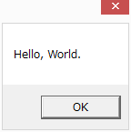
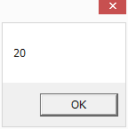
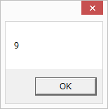
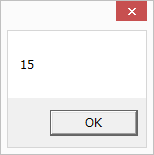
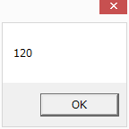

第1章 はじめよう
初めてのプログラム
最初は画面に"Hello, World."と表示するプログラムを作りましょう。
MokkosuPadを起動して、ソースファイルウインドウに以下のプログラムを 入力してください。
msgbox "Hello, World.";
ファイルメニューから名前を付けて保存を選んで、
ソースコードをHello.mokという名前で保存します。
操作メニューから実行を選ぶと、
Hello, World.と書かれたメッセージボックスが表示されます。

練習問題 1.1
画面に自分の名前を表示するプログラムを作成しましょう。
式の計算をしよう
Mokkosu で式を計算して結果を表示するプログラムを書きましょう。
以下は2 + 3 * 4を計算して表示するプログラムです。
msgbox (2 + 3 * 4);
プログラムを実行すると以下の表示が出ます。

整数に関連する演算子には以下のものがあります。
| 演算子 | 意味 |
|---|---|
式1 + 式2 |
加算 |
式1 - 式2 |
減算 |
式1 * 式2 |
乗算 |
式1 / 式2 |
除算 |
式1 % 式2 |
剰余 |
~-式 |
符号反転 |
計算結果が14になっていることに注目してください。
Mokkosuでは数学のように足し算や引き算よりも掛け算や割り算の方が
先に計算されます。
数学と同じように括弧を使って先に計算する
部分を明示することもできます。
例えば上の式で2 + 3を先に計算したければ、
msgbox((2 + 3) * 4);
と書きます。実行すると今度は以下のように表示されます。

練習問題 1.2
底辺の長さが10高さが5の三角形の面積を計算するプログラムを書いてください。
計算結果に名前を付けよう
let文を使うと計算結果に名前を付けてプログラムを分かりやすくしたり、
結果を保存したりできます。
以下のプログラムでは、文字列"Hello, World."にmessageと名前を
を付けて、msgbox関数の内部で参照しています。
let message = "Hello, World.";
msgbox message;
Mokkosuでは関数の引数に括弧は不要です。 複数の引数をスペースで区切って与えることが関数の呼び出しが実現できます。
上のプログラムを実行すると以下のように表示されます。
今回のプログラムはこれまでのものと違って、 出力ウインドウに以下のように表示されます。
message : String
これは変数messageに文字列値が格納されていることを
表しています。
以下は変数に整数値を格納した例です。
let x = 1 + 2;
msgbox (x * x);
実行すると出力ウインドウに
x : Int
と表示されて以下が表示されます。

x : Intはxに整数値が格納されていることを
表しています。
練習問題 1.3
letと変数を使って2の8乗を計算するプログラムを書いて実行してください。
関数を定義しよう
Mokkosuでは簡単に関数を定義することができます。
以下は引数の値を倍にして返す関数fを定義して使う例です。
fun f x = x * 2;
msgbox (f 10);
実行すると以下のように表示されます。

右の出力ウインドウに注目すると、
f : Int -> Int
と表示されていることに気付くと思います。
これは関数fが整数を受け取って整数を返す関数であることを示しています。
矢印の左側が引数の型で、右側が戻り値の型です。
関数が引数を複数持つ場合は、引数名を複数並べます。
以下は四角形の幅と高さが与えられた時に、 その四角形の面積を返す関数を定義して使う例です。
fun area width height = width * height;
msgbox (area 3 5);
実行すると以下のように表示されます。

型は以下のようになります。
area : Int -> Int -> Int
複数の引数をもつ関数の型はこのように引数の型を->で区切った型になります。
練習問題 1.4
三角形の面積を求める関数を定義してください。
条件に応じて分岐しよう
条件に応じて分岐するにはif式を使います。
例えば、引数の整数の絶対値を求める関数absは以下のように定義できます。
fun abs x =
if x < 0 -> ~-x
else x;
msgbox (abs 5);
msgbox (abs ~-3);
実行すると以下のように表示されます。

値を比較する演算子には以下のものがあります。
| 演算子 | 意味 |
|---|---|
式1 == 式2 |
等しい |
式1 <> 式2 |
等しくない |
式1 < 式2 |
より小さい |
式1 > 式2 |
より大きい |
式1 <= 式2 |
以下 |
式1 >= 式2 |
以上 |
練習問題 1.5
引数を2つ受け取ってそれらが等しければ2倍した値を返す関数を定義してください。
再帰関数を定義しよう
再帰関数とは自分自身を呼び出す関数のことです。
以下のプログラムでは自分自身を呼び出すことで、
引数の整数の階乗を計算する関数factを定義して使っています。
fun fact n =
if n == 0 -> 1
else n * fact (n - 1);
msgbox (fact 5);
実行すると以下のように表示されます。

練習問題 1.6
1から10までの整数を足した和を計算する関数を再帰関数を用いて定義してください。
練習問題 1.7
フィボナッチ数列のn項目を計算する関数を再帰関数を用いて定義してください。